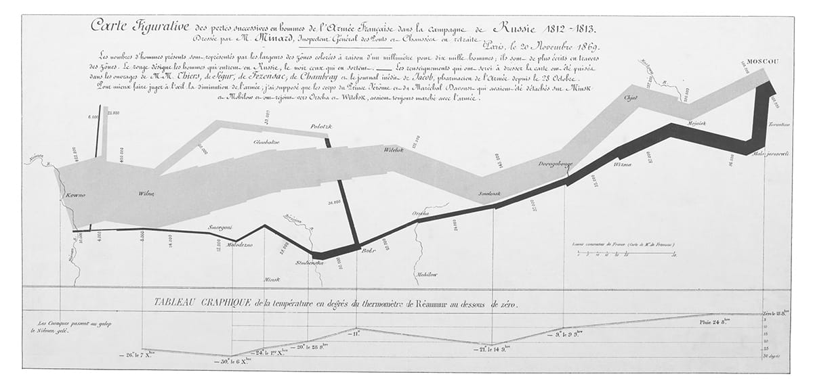

Nhiều trận đánh thất bại là do mất hy vọng hơn là do mất máu.
• Được cho là do Napoleon nói
Những cuộc rút lui luôn gây tổn thất về người và vật chất lớn hơn những trận giao chiến đẫm máu nhất.
• Tôn chỉ quân sự số 6 của Napoleon
⚝ ✽ ⚝
Vào buổi chiều sau trận Borodino, Napoleon đi thăm chiến trường. “Nguyên từng hàng các trung đoàn Nga, nằm trên mặt đất ướt sũng máu của họ, cho thấy họ thà chết còn hơn lùi một bước”, Bausset nhớ lại. “Napoleon thu thập tất cả thông tin có thể về những chốn tang thương này, ông ấy thậm chí còn tìm hiểu số cúc áo quân phục của họ… nhằm xác định tính chất và vị trí của các đơn vị địch được huy động, song điều ông ấy lo hơn cả là việc chăm sóc thương binh”. Khi ngựa của ông giẫm phải một người Nga đang hấp hối, Napoleon phản ứng “bằng cách vồn vã dành mọi sự quan tâm nhân đạo cho kẻ khốn khổ này”, và khi một trong các sĩ quan tham mưu chỉ ra rằng anh ta “chỉ là một người Nga” thì Napoleon liền vặc lại, “Sau một chiến thắng không có kẻ thù nữa, chỉ có con người.”
Hoàng đế hy vọng việc ông chiếm Moscow sẽ làm giảm áp lực lên các cánh quân của Macdonald và Schwarzenberg ở phía bắc và phía nam, ông viết cho người sau vào ngày 10 tháng Chín: “Giờ đây, khi kẻ thù đã bị đánh trúng tim, chúng chỉ tập trung vào tim và không còn nghĩ tới các chi nữa”. Murat bắt đầu truy kích người Nga đang rút lui, chiếm Mozhaisk và bắt 10.000 thương binh của họ. Hôm sau, chủ lực Pháp lại tiến quân sau hai ngày nghỉ ngơi, đến lúc này đã rõ là người Nga sẽ không đánh một trận lớn nữa trước cửa ngõ Moscow. “Napoleon là một dòng nước lũ”, Kutuzov nói khi quyết định từ bỏ thành phố, “nhưng Moscow là miếng bọt biển sẽ hút cạn ông ta”. Quân đội Nga hành quân thẳng qua Moscow vào sáng ngày 14; khi đã rõ là thành phố sẽ bị bỏ lại, gần như toàn bộ dân cư thành phố rời bỏ nhà cửa của mình trong một cuộc di tản khổng lồ, cất giấu hoặc phá hủy mọi thứ có thể hữu dụng cho kẻ xâm lược mà họ không thể mang theo. Trong số 250.000 cư dân, chỉ có khoảng 15.000 người ở lại, trong đó nhiều người không phải là người Nga, bên cạnh những kẻ trộm cướp từ các vùng nông thôn lân cận tìm vào thành phố. Ngày 13 tháng Chín, Hiệu trưởng trường Đại học Moscow và một đoàn đại biểu người Pháp tại Moscow đã tới thăm bản doanh của Napoleon để báo cho ông biết thành phố bị bỏ trống, do đó sẽ không có đại biểu nhân sĩ nào tới để dâng món quà truyền thống gồm bánh mì và muối, nộp lại chìa khóa thành phố. Thay vào đó, một lão nông sáng ý rụt rè đứng dậy đề nghị dành cho Hoàng đế một chuyến tham quan có người hướng dẫn qua những nơi đáng quan tâm chính của thành phố – một cơ hội đã được lịch sự từ chối.
Khi binh lính thấy thành phố trải ra trước mặt họ từ trên đồi Salvation (Cứu rỗi), họ đã reo lên “Moscow! Moscow!” và hành quân tới với sinh lực được phục hồi. “Moscow mang một dáng vẻ phương Đông, hay đúng hơn là một vẻ mê hoặc”, Đại úy Heinrich von Brandt thuộc Binh đoàn Vistula nhớ lại, “với 500 mái vòm được thếp vàng hoặc sơn những màu sắc kỳ lạ nhất vươn lên đây đó trên một biển nhà thực sự”. Napoleon thì nói một cách tẻ nhạt hơn: “Đấy, cuối cùng thì thành phố trứ danh cũng ở đó; đến lúc rồi!” Murat dàn xếp một cuộc ngừng bắn với hậu quân Nga và chiếm đóng thành phố. Vì các lý do hậu cần và an ninh, và với hy vọng Đại quân sẽ không cướp phá tanh bành, chỉ Cận vệ Đế chế và Vệ binh Hoàng gia Italy được phép đóng quân trong thành phố; tất cả các đơn vị khác phải đóng trên các cánh đồng bên ngoài thành, dù binh lính đã nhanh chóng xâm nhập vào các tỉnh ngoại ô để cướp phá.
Napoleon tiến vào Moscow sáng Thứ ba, 15 tháng Chín, tới ở tại điện Kremlin (sau khi nơi này đã được dò mìn), và đi ngủ sớm.(*) “Thành phố này cũng rộng như Paris”, Napoleon viết cho Marie Louie, “có đầy đủ mọi thứ”. Ségur nhớ lại “những hy vọng lúc trước của Napoleon đã sống lại khi nhìn thấy cung điện” như thế nào, nhưng đến sẩm tối hôm đó, các đám cháy bùng phát đồng loạt khắp thành phố và không thể kiểm soát được do một cơn gió đông bắc thổi mạnh, và thực tế là Fyodor Rostopchin Tổng trấn thành phố đã cho mang đi hay phá hủy hết thiết bị chữa cháy và đánh chìm đội thuyền cứu hỏa của thành phố trước khi rời đi. “Ta đã châm lửa đốt dinh thự của mình”, ông ta viết cho người Pháp trên một tấm biển nơi điền trang của mình tại Voronovo ngoại ô Moscow, “còn hơn để nó bị sự hiện diện của các người làm nhơ bẩn”. (Dù sau này ông ta được ca ngợi vì đã ra lệnh đốt Moscow, một số đám cháy được khơi ngòi bởi những tên tội phạm mà ông ta thả khỏi nhà tù thành phố cho mục đích này, nhưng về cuối đời Rostopchin lại bác bỏ việc mình đã làm vậy, trước sự ngạc nhiên của bạn bè và gia đình ông ta.) Đêm đó, những đám cháy rực sáng tới mức có thể đọc được ở Kremlin mà không cần đến đèn.
Như vậy, ngay khi người Pháp tiến vào Moscow và bắt đầu cướp phá nó, họ cũng đồng thời phải cố gắng cứu nó khỏi bị chính các cư dân đốt trụi. Không hiểu biết về địa hình và thiết bị chữa cháy, nên họ không đủ sức để đảm trách việc này. Họ đã bắn hạ khoảng 400 kẻ phóng hỏa, nhưng 6.500 trong số 9.000 ngôi nhà lớn của thành phố đã bị cháy trụi hoặc hư hỏng. Napoleon nhớ lại, nhiều binh sĩ của mình đã chết trong khi “làm chuyện cướp phá giữa biển lửa”. Lúc họ dọn dẹp thành phố sau khi người Pháp đã rời đi, người Moscow tìm thấy thi thể cháy xém của gần 12.000 người và hơn 12.500 con ngựa.
Napoleon đang thiếp đi khá nhanh trên chiếc giường sắt dã chiến của ông dưới các chùm đèn tại Kremlin thì bị đánh thức lúc 4 giờ sáng 16 tháng Chín, và được báo cáo về các đám cháy. “Thật là một cảnh tượng kinh khủng!” ông thốt lên, quan sát chúng từ một cửa sổ mà các tấm kính của nó đã nóng rẫy khi chạm vào. “Chính họ đã làm! Bao nhiêu cung điện! Một sự kiên quyết mới phi thường làm sao! Con người là thế! Họ đúng là người Scythe!” (Như thường lệ, ông trở lại thời Chế độ cũ để tìm một sự so sánh, mà ở đây là với bộ lạc Ba Tư nổi tiếng tàn nhẫn được Herodotus mô tả, đã rời bỏ quê hương mình ở Iran để tới chiến đấu trên các thảo nguyên trung tâm Á-Âu.) Ông đã may mắn không trở thành nạn nhân của cuộc hỏa hoạn, khi những lính gác thiếu trách nhiệm đã cho phép một đoàn xe tải pháo binh – có cả xe chở thuốc súng – đỗ lại ngay dưới cửa sổ phòng ngủ của ông ở Kremlin. Nếu một trong những tàn lửa cháy rực đang bay lượn khắp nơi rơi xuống đó, Ségur ghi nhận, “Tinh hoa của quân đội và Hoàng đế hẳn đã bị hủy diệt”. Sau khi dùng phần lớn thời gian hôm đó để tổ chức binh lính thành các đội chữa cháy, giật đổ nhà trên đường lửa cháy lan và thẩm vấn hai kẻ phóng hỏa, đến 5:30 chiều, Napoleon chiều theo sự hối thúc của Berthier, Murat và Eugène, rời khỏi thành phố khi lửa lan tới kho vũ khí của Kremlin. Như Ségur nhớ lại, “Chúng tôi khi đó chẳng có gì để thở ngoài khói và tro”. Chuyến đi dài hai tiếng tới hành cung của Petrovsky cách thành phố 9,6 km khá nguy hiểm, có lúc phải đi bộ vì lũ ngựa phát hoảng trước lửa. Vì các lối ra vào ở mặt trước Kremlin khi đó đã bị lửa và các đống đổ nát bịt kín, nên Napoleon thoát ra qua một cánh cổng bí mật phía sau, nơi bờ đá trên dòng sông. “Sau những đoạn dài lòng vòng”, Tướng Fantin des Odoards kỳ cựu nhớ lại, “ông ấy đã thoát khỏi hiểm nguy”. Một trong những tổng quản hoàng gia, Guillaume Peyrusse, người cũng được sơ tán, kể với em trai: “Bọn anh như bị luộc trong những cỗ xe… lũ ngựa không muốn đi tới. Anh đã lo lắng cực kỳ kinh khủng cho kho báu”. Kho báu an toàn, và nhanh chóng được bổ sung khi một lò luyện tại chỗ được xây dựng để nấu chảy 5.300 kg vàng và 293 kg bạc, phần lớn được tước đoạt từ các cung điện và nhà thờ.
•••
Nói về chiến dịch Nga sau đó hai năm, Napoleon thừa nhận, “khi [ta] tới được Moscow, [ta] đã coi công việc là hoàn tất”. Ông tuyên bố mình có thể ở lại trong thành phố với nguồn hậu cần đầy đủ qua cả mùa đông nếu Moscow đã không bị đốt, “một biến cố mà ta đã không tính đến, vì ta tin rằng chưa từng có tiền lệ cho nó trong lịch sử thế giới. Nhưng có Chúa chứng giám, phải thừa nhận rằng hành động này thể hiện một tính cách mạnh mẽ ghê gớm”. Cho dù một phần thành phố thoát được trận hỏa hoạn đủ để trú quân mùa đông, và một số lương thực dự trữ được tìm thấy dưới hầm các tư gia, song chừng đó còn xa mới đủ để duy trì một đội quân hơn 100.000 người trong sáu tháng mùa đông. Không có đủ cỏ khô cho ngựa, lửa sưởi phải dùng đến củi từ các món đồ gỗ nội thất và khung cửa sổ, chẳng mấy chốc quân đội đã phải sống nhờ vào thịt ngựa thối rữa. Nhìn lại thời điểm đó, hẳn sẽ tốt hơn cho người Pháp nếu toàn bộ thành phố bị cháy trụi tới tận nền, vì điều đó chắc chắn sẽ buộc họ phải lập tức rút lui.
Lực lượng tấn công trung tâm của Đại quân đã teo lại chỉ còn bằng chưa tới một nửa quy mô ban đầu của nó trong 82 ngày kể từ khi vượt sông Niemen cho tới lúc tiến vào Moscow. Theo những con số Napoleon đưa ra vào lúc đó, ông đã mất 92.390 người khi trận Borodino kết thúc. Thế nhưng ông đã không hề hành động như một người không có nhiều lựa chọn. Trong hai ngày ông trải qua tại cung điện Petrovsky xinh đẹp, ông đã cân nhắc tới việc gần như lập tức rút lui về hạ lưu sông Dvina bằng một cuộc hành quân vòng cung, trong khi để cánh quân của Eugène ra đi làm như thể ông sắp tiến quân về St Petersburg. Ông nói với Fain rằng ông tin mình có thể ở giữa Riga và Smolensk vào trung tuần tháng Mười. Nhưng cho dù ông bắt đầu xem xét các bản đồ và soạn thảo mệnh lệnh, chỉ có Eugène ủng hộ ý tưởng này. Các sĩ quan cao cấp khác phản ứng với vẻ “phẫn nộ”, lập luận rằng quân đội cần được nghỉ ngơi, và tiến về phía bắc sẽ là “đi tìm mùa đông, như thể nó đến chưa đủ sớm vậy!” Họ thúc giục Napoleon đề nghị hòa bình với Alexander. Các bác sĩ quân y phẫu thuật cần nhiều thời gian hơn để điều trị cho thương binh và họ lập luận rằng Moscow vẫn còn nguồn cung cấp dưới lớp tro tàn. Napoleon nói với các cố vấn của mình: “Đừng tin rằng những người đã đốt Moscow là những người chấp nhận hòa bình vài ngày sau đó; nếu các phe phái mang quan điểm kiên quyết này chiếm ưu thế trong triều đình của Alexander hiện tại, mọi hy vọng mà ta thấy các vị đang tự huyễn hoặc mình đều là vô vọng.”
Một kế hoạch khác được đề xuất là tiến quân tới triều đình của Alexander ở St Petersburg cách đó gần 640 km, nhưng Berthier và Bessières nhanh chóng thuyết phục Napoleon trên cơ sở hậu cần rằng “ông không hề có thời gian, nguồn cung cấp, đường xá, hay bất cứ điều kiện tiên quyết nào cho một cuộc viễn chinh quy mô như thế”. Thay vì vậy, họ bàn đến khả năng tiến về phía nam gần 160 km tới Kaluga và Tula, theo thứ tự là vựa lương thực và xưởng quân khí của Nga, hoặc rút lui về Smolensk. Napoleon rốt cuộc lựa chọn cách mà sau đó đã chứng tỏ là phương án tồi tệ nhất như có thể: quay lại Kremlin, nơi đã thoát khỏi trận hỏa hoạn, vào ngày 18 tháng Chín để đợi xem liệu Alexander có đồng ý kết thúc chiến tranh. “Ta đáng ra chỉ nên ở lại Moscow tối đa không quá hai tuần”, sau này Napoleon nói, “nhưng ta đã bị lừa dối từ ngày này qua ngày khác”. Điều này không đúng. Alexander đã không hề lừa dối Napoleon tới chỗ nghĩ rằng ông ta đang quan tâm tới hòa bình; ông ta chỉ đơn giản là từ chối trả lời khẳng định hay phủ định. Và Napoleon cũng không hề tự lừa dối chính mình; trận hỏa hoạn tại Moscow khẳng định niềm tin của ông rằng không có hy vọng cho hòa bình, cho dù ông rất có thể đã chấp nhận sự trở lại đơn thuần của Nga vào Hệ thống Lục địa như cái giá cho hòa bình. Lý do ông nán lại Moscow lâu đến thế là bởi ông nghĩ mình có thừa thời gian trước khi cần phải đưa quân mình trở lại khu đóng quân mùa đông tại Smolensk, và ông muốn sống nhờ vào nguồn lực của kẻ địch hơn.
Ngày 18 tháng Chín, Napoleon phân phát 50.000 rúp cướp được cho người dân Moscow bị mất nhà, và ông tới thăm một trại trẻ mồ côi, xua tan tin đồn đang lan tràn rằng ông sẽ ăn thịt cư dân thành phố. “Moscow từng là một thành phố rất đẹp”, ông viết cho Maret, sử dụng thì quá khứ. Nga sẽ phải mất 200 năm để hồi phục từ những thiệt hại mà nó phải gánh chịu”. Ông viết cho Alexander vào ngày 20, khi cuối cùng những cơn mưa thu cũng dập tắt lửa, vốn đã cháy trong sáu ngày ở một số nơi. (Lá thư được mang đi bởi em trai linh mục người Nga ở Cassel, người Nga có địa vị cao nhất bị bắt tại Moscow, nó cho thấy việc sơ tán giới quý tộc khỏi thành phố đã triệt để tới mức nào.) “Nếu Hoàng thượng vẫn dành cho ta một chút tình cảm trước đây của ngài, ngài sẽ không bực bội về lá thư này”, ông mở đầu.
⚝ ✽ ⚝
Khi nhận được thư này, Sa hoàng lập tức cho gọi Huân tước Cathcart, Đại sứ Anh, và nói với ông ta là kể cả có đến 20 tai họa như những gì đã xảy ra tại Moscow cũng sẽ không thể khiến mình từ bỏ cuộc chiến. Danh sách các thành phố Napoleon đưa ra trong lá thư đó – và nó đã có thể dài hơn – cho thấy là ông biết từ kinh nghiệm rằng chiếm thủ đô địch không hề dẫn tới sự đầu hàng của đối phương, và Moscow thậm chí còn không phải là thủ đô nơi chính quyền Nga đóng. Điều đảm bảo cho chiến thắng của ông là việc tiêu diệt chủ lực địch như ở Marengo, Austerlitz, và Friedland, nhưng Napoleon đã không làm được điều đó tại Borodino.
Trong khi chờ đợi câu trả lời của Alexander, Hoàng đế cố gắng thu xếp để cuộc sống của binh lính tại Moscow được dễ chịu nhất như có thể, bằng việc tổ chức các hoạt động giải trí cho họ, dù có một số hoạt động ông không cho phép. “Bất chấp những cảnh cáo lặp đi lặp lại”, một mệnh lệnh viết, “binh lính tiếp tục đi vệ sinh trong sân, thậm chí dưới cả cửa sổ phòng của Hoàng đế; từ nay, lệnh cho mỗi đơn vị thiết lập các toán bị phạt đào hố vệ sinh… xô sẽ được đặt ở các góc doanh trại và được đổ hai lần mỗi ngày”. Napoleon sử dụng thời gian của mình tại Kremlin để tái tổ chức các đơn vị quân đội và kiểm điểm tổn thất của họ, kiểm tra họ và nhận những báo cáo chi tiết về tình hình của họ, những báo cáo này cho ông biết mình vẫn còn trên 100.000 quân có khả năng tác chiến sau khi được tăng viện. Trong khi đó, đạn pháo được thu nhặt trên chiến trường Borodino bắt đầu được chuyển tới bằng xe ngựa. Ông thích duy trì vẻ bề ngoài liên tục hoạt động: Angel một trong các người hầu của ông sau này tiết lộ rằng mình đã được lệnh thắp hai cây nến nơi cửa sổ phòng Napoleon hằng đêm, “để binh lính thốt lên ‘Nhìn kìa, Hoàng đế không ngủ dù ngày hay đêm. Ngài làm việc liên tục!’”
Khi Napoleon biết được cảnh ngộ đoàn kịch của bà Aurore Bursay gồm 14 nam nữ nghệ sĩ Pháp bị cả quân Nga lẫn quân Pháp cướp bóc, ông đã trợ giúp bà và yêu cầu bà biểu diễn 11 vở kịch, chủ yếu là hài kịch và ba-lê, ở nhà hát Posniakov. Bản thân ông không đi xem, nhưng ông có lắng nghe ông Tarquinio, một ca sĩ nổi tiếng của Moscow. Ông thường xuyên soạn các quy định mới cho Comédie-Française, và quyết định ông muốn cây thánh giá mạ vàng khổng lồ trên tháp chuông Ivan Đại đế được cắm lên mái vòm của điện Invalides. (Khi họ tháo nó xuống, hóa ra nó chỉ làm bằng gỗ thếp vàng, và nó đã bị sư đoàn Ba Lan của Tướng Michel Chaparède ném xuống sông Berezina trên đường rút lui.)
Một cách mà Napoleon đã có thể gây rắc rối lớn cho tầng lớp cầm quyền Nga là giải phóng nông nô khỏi ách ràng buộc trọn đời với các chủ đất quý tộc. Cuộc khởi nghĩa nông nô đầy bạo lực của Emilian Pugachev vào giữa thập niên 1770 đã báo trước cuộc Cách mạng Pháp về nhiều phương diện, và giới tinh hoa Nga đã bị kinh hoàng trước việc Napoleon có thể quay lại với những tư tưởng của nó. Đúng là ông có ra lệnh mang những tài liệu về cuộc khởi nghĩa Pugachev từ các tàng thư của Kremlin tới cho mình, và yêu cầu Eugène cung cấp thông tin về một cuộc bạo động của nông dân ở Velikiye, đồng thời “cho ta biết cần đưa ra những sắc lệnh và tuyên bố nào để có thể kích động nông dân nổi dậy tại Nga và tập hợp họ”. Song dù có xóa bỏ chế độ phong kiến ở tất cả các vùng đất ông chinh phục, nhưng ông đã không giải phóng nông nô Nga, những người mà ông cho là ngu muội và chưa văn minh. Hành động đó tất nhiên cũng sẽ không giúp đưa Alexander tới bàn đàm phán.
Trong tuần đầu tiên của tháng Mười, Napoleon cử cựu đại sứ của ông tại Nga là Jacques de Lauriston tới gặp Kutuzov, người đã cố thủ tại Tarutino phía sau sông Nara, cách Moscow 72 km về phía tây nam. Theo Ségur, những lời Napoleon khi chia tay phái viên của mình là: “Ta muốn hòa bình, ta phải có hòa bình, ta chắc chắn sẽ có hòa bình – thứ duy nhất cứu vãn danh dự của ta!” Kutuzov từ chối cấp giấy thông hành cho Lauriston tới St Petersburg, nói rằng thay vì thế thông điệp của ông này sẽ được Công tước Sergei Volkonsky chuyển đi. Một lần nữa, không có câu trả lời. Đến giai đoạn này, Murat đang mất 40 đến 50 người mỗi ngày vì những toán du kích Cossack nơi ngoại ô Moscow, và đạo quân của Kutuzov đã tăng lên 88.300 lính chính quy, 13.000 lính Cossack sông Don chính quy, thêm 15.000 lính Cossack không chính quy và kỵ binh Bashkir, cùng 622 khẩu pháo. Ngược lại, Napoleon chỉ nhận được 15.000 quân tăng viện trong 35 ngày ông ở Moscow, trong khi 10.000 người chết vì vết thương hoặc bệnh tật tại đó.
Thời tiết đẹp ở Moscow, mà Napoleon viết cho Marie Louise là “ấm chẳng khác gì ở Paris” vào ngày 6 tháng Mười, đã khiến cho việc binh lính ném quần áo mùa đông của mình đi trong cuộc hành quân giữa cái nóng hầm hập từ sông Niemen bốc lên có vẻ như không mấy quan trọng, cho dù nó làm ông lo ngại về việc không thể mua giày, ủng và ngựa mà họ sẽ sớm cần đến. Trong lá thư thứ hai gửi Marie Louise hôm đó, ông yêu cầu cô thuyết phục cha mình tăng viện cho cánh quân của Schwarzenberg, “để đó có thể là một công trạng cho ông ấy”. Ông đã không thể biết rằng Metternich từng có thỏa thuận bí mật với Sa hoàng về việc Áo sẽ không làm điều gì như vậy, và cũng vào khoảng thời gian này Schwarzenberg bắt đầu xử sự độc lập một cách đáng ngờ, lẩn tránh bất cứ va chạm nào với người Nga mà ông ta có thể. “Ngay lúc này”, Napoleon nói với Fain vào giữa tháng Chín, thừa nhận thêm một thất bại ngoại giao nữa của mình vào năm đó, “Bernadotte đáng lẽ đã phải ở St Petersburg và người Thổ ở Crimea.”
Napoleon đã tập hợp mọi tư liệu và biểu đồ sẵn có về mùa đông Nga, chúng cho ông biết phải chờ tới tháng Mười một nhiệt độ mới xuống dưới 0 độ. “Không thông tin nào, không tính toán nào về chủ đề đó bị sao lãng, và yên tâm với mọi khả năng”, Fain nhớ lại, “thường chỉ vào tháng Mười hai và tháng Một thì mùa đông Nga mới rất khắc nghiệt. Trong suốt tháng Mười một, nhiệt kế không xuống thấp hơn sáu độ nhiều lắm”. Những quan sát được thực hiện trong các mùa đông của 20 năm trước đó xác nhận rằng tới tận giữa tháng Mười một nước sông Moskva mới đóng băng, và Napoleon tin điều này cho ông có thừa thời gian để quay về Smolensk. Đạo quân của ông đã mất chưa đến ba tuần để từ Smolensk tới Moscow, gồm cả ba ngày tại Borodino.
Cuốn Lịch sử về Charles XII của Voltaire mà Napoleon đọc khi ở Moscow mô tả mùa đông Nga lạnh tới mức chim đông cứng trên không trung, rơi từ trên trời xuống như thể bị bắn. Hoàng đế cũng đọc ba tập sách Lịch sử quân sự của Charles XII do Gustavus Adlerfeld thị thần của nhà vua xuất bản năm 1741, sách kết thúc với tai họa ở Poltava. Adlerfeld quy thất bại của Vua Thụy Điển cho sự kháng cự kiên quyết của người Nga và cái lạnh “giá buốt” của mùa đông. “Trong một cuộc hành quân, 2.000 người đã chết gục vì lạnh”, một đoạn trong tập 3 viết, và ở một đoạn khác lính Thụy Điển “buộc phải sưởi ấm mình với những bộ da thú tốt nhất mà họ có thể có; họ thường thiếu thốn kể cả bánh mì; họ buộc phải dìm gần như tất cả đại bác của mình xuống các đầm lầy và dòng sông vì thiếu ngựa kéo. Đạo quân này, từng có lúc đầy sinh lực, giờ đây… sắp chết vì đói”. Adlerfeld viết về những buổi đêm “cực kỳ lạnh… nhiều người chết vì cái lạnh vô cùng khắc nghiệt, và một số lớn mất khả năng sử dụng tứ chi, tức hai bàn chân và hai bàn tay họ”. Chỉ nguyên từ bộ sách này chứ chưa cần từ đâu khác, Napoleon hẳn đã phải hiểu rõ mức độ khắc nghiệt của mùa đông Nga. Khi cuối cùng quân Pháp cũng rời Moscow vào ngày 18 tháng Mười, ông nói với ban tham mưu của mình: “Khẩn trương lên, chúng ta cần về tới khu trú quân mùa đông trong 20 ngày nữa”. Trận tuyết rơi nặng hạt đầu tiên diễn ra sau đó 17 ngày, nghĩa là ông chỉ chậm mất ba ngày. Chỉ có các mối quan tâm về quân sự, chứ không phải bất cứ sự thiếu hiểu biết nào về thời tiết, đã buộc ông phải chọn một tuyến đường khác xa hơn nhiều để quay về Smolensk thay vì tuyến đường dự kiến ban đầu.
Những bông tuyết đầu tiên rơi xuống ngày 13. Cho tới lúc đó, tình hình cỏ khô cho ngựa đã trở nên đáng lo ngại, các toán quân rời Moscow từ rạng sáng và hiếm khi quay về trước lúc màn đêm buông xuống với những con ngựa của họ đã kiệt sức. Vẫn không nhận được câu trả lời nào từ Alexander khi giờ đây mùa đông rõ ràng đang tới gần, cuối cùng vào ngày 13 tháng Mười Napoleon cũng ra lệnh triệt thoái khỏi thành phố sau đó năm ngày. Quyết định này được củng cố với việc Lauriston quay về hôm 17, mang theo lời từ chối đình chiến của Kutuzov. Khi Đại quân, lúc này gồm khoảng 107.000 binh sĩ, hàng nghìn thường dân, 3.000 tù binh Nga, 550 khẩu pháo và hơn 40.000 cỗ xe chất đầy thành quả của hơn một tháng cướp bóc – thứ mọi người lựa chọn mang theo thay vì lương thực dự trữ – bắt đầu triệt thoái khỏi Moscow ngày 18, Kutuzov tung ra một cuộc tấn công bất ngờ đầy ấn tượng tại Tarutino (còn được gọi là Vinkovo), trong trận này Murat có 2.000 người bị thương vong, 1.500 người bị bắt, và 36 khẩu pháo bị chiếm.
•••
Bản thân Napoleon rời Moscow dưới ánh nắng rực rỡ vào khoảng giữa trưa ngày 19 tháng Mười năm 1812, theo tuyến đường phía nam về phía Kaluga – được ông đặt biệt danh là “Caligula”, cũng như ông đã gọi Glogau là “Gourgaud” – nằm cách đó 176 km về phía tây nam. Ông vẫn duy trì khả năng đi tới Tula, nơi ông hy vọng phá hủy các nhà máy vũ khí của Nga, và tới vùng Ukraine phì nhiêu trong khi đưa tiếp viện từ Smolensk tới, hoặc lùi về Smolensk và Lithuania nếu cần. Dù theo cách nào, nó cũng cho phép ông thể hiện cuộc rút lui khỏi Moscow chỉ như một cuộc rút lui chiến lược, giai đoạn tiếp theo của chiến dịch trừng phạt Alexander. Nhưng đạo quân yếu ớt, cồng kềnh của ông quá chậm chạp cho kiểu tác chiến giờ đây ông cần đẩy nhanh, và bùn lầy do mưa lớn tạo ra vào tối 21 tháng Mười chỉ càng làm họ bị chậm hơn. Trong hai ngày đầu, Kutuzov không hề biết về cuộc rút lui, nên việc Đại quân đang chậm chạp lê bước thành một đội hình trải dài 96 km cũng không gây ra hậu quả gì lớn. Ông ta điều Quân đoàn 6 của Tướng Dokhturov chặn đường Napoleon tại Maloyaroslavets. Dokhturov tới nơi ngày 23 và hôm sau thì chạm trán với tiền quân của Eugène do Tướng Alexis Delzons chỉ huy.
Việc Napoleon ra lệnh cho Mortier dùng thuốc nổ phá hủy Kremlin đã bị cáo buộc như một hành vi báo thù kiểu Corse, nhưng thực ra đây là một cách để bỏ ngỏ các lựa chọn của ông. Ông đã nói với Tướng de Lariboisière, “Có thể ta sẽ trở lại Moscow”, và tính toán rằng ông sẽ dễ dàng chiếm lại thành phố hơn nếu không có hệ thống phòng ngự đáng gờm tại Kremlin nữa. Mortier đã đặt 180 tấn thuốc nổ trong các mái vòm dưới Kremlin, và Napoleon nghe thấy tiếng nổ vào lúc 1:30 sáng ngày 20 từ cách đó 40 km. Ông tuyên bố trong một bản thông cáo rằng “Kremlin, tòa thành cổ xưa, cùng thời với sự trỗi dậy của nền quân chủ [Romanov], cung điện của các Sa hoàng, đã không còn tồn tại”, song trên thực tế cho dù kho vũ khí, một trong các tòa tháp, và cổng Nikolsky bị phá hủy, còn tháp chuông Ivan bị hư hại, thì phần còn lại của Kremlin đã trụ lại. Napoleon cũng hối thúc Mortier đưa tất cả thương binh rời khỏi Moscow, rút ra từ các tiền lệ thời Chế độ cũ để nói: “Người La Mã tặng vòng nguyệt quế dân sự cho những người cứu sống các công dân; Công tước de Treviso sẽ xứng đáng với điều này chừng nào ông cứu sống binh lính… ông phải để họ cưỡi trên ngựa của mình và của binh lính dưới quyền ông; đây là điều Hoàng đế đã làm tại Acre”. Mortier mang theo tất cả thương binh có thể tự đi được, dù phải bỏ lại 4.000 người tại bệnh viện Foundlings. Ngay trước khi ông rời đi, Napoleon đã cho xử bắn 10 tù binh Nga vì tội phóng hỏa. Nó không thể sánh với Jaffa, song đây là một hành động tàn bạo không thể lý giải và khó làm tăng thêm cơ hội sống sót cho những thương binh Pháp ông buộc phải bỏ lại.
•••
Trận Maloyaroslavets, trận đánh lớn thứ ba của chiến dịch, diễn ra ở khu đất cao phía trên sông Luzha vào ngày 24 tháng Mười, có hệ quả vượt xa kết quả tức thời của nó. Cuối cùng, người Pháp đã chiếm và giữ được thành phố, còn Kutuzov rút theo tuyến đường đi Kaluga, nhưng cuộc giao chiến vô cùng khốc liệt – trong đó thành phố đổi chủ chín lần trong ngày – đã thuyết phục Napoleon, người chỉ tới nơi khi trận đánh gần kết thúc, rằng người Nga sẽ giành giật dữ dội con đường phía nam. (“Giết một người Nga là chưa đủ”, câu nói đầy ngưỡng mộ lan truyền trong Đại quân, “cần phải đẩy hắn ngã nữa”.) Cho dù Hoàng đế mô tả Maloyaroslavets như một chiến thắng trong bản thông cáo của mình, nhưng nhân viên đồ bản, Đại úy Eugène Labaume, một người chỉ trích gay gắt, lại nhớ là mọi người đã nói: “Thêm hai ‘chiến thắng’ như thế nữa và Napoleon sẽ chẳng còn lại quân đội nào nữa”. Maloyaroslavets bị cháy rụi trong trận đánh – ngày nay chỉ còn lại tòa tu viện bằng đá với những lỗ đạn trên cổng – nhưng từ vị trí của những đống xác cháy đen, Hoàng đế có thể thấy người Nga chiến đấu quyết liệt đến thế nào.
Lúc 11 giờ đêm, Bessières tới bản doanh của Napoleon trong căn lều của một thợ dệt gần cây cầu tại Gorodnya, một ngôi làng nằm cách Moscow 96 km về phía tây nam, nói với Hoàng đế rằng ông ta tin là vị trí của Kutuzov ở xa hơn về phía nam dưới con đường là “không thể tấn công được”. Khi Napoleon ra ngoài lúc 4 giờ sáng hôm sau để thử tự mình quan sát – không thể nhìn xa quá thành phố từ sườn đồi ở bên kia bờ lạch nước – suýt nữa ông đã bị bắt bởi một đơn vị khinh kỵ gồm nhiều người Tatar xông lại cách ông khoảng 36 m và hò hét, “Houra! Houra!” (Bắt lấy! Bắt lấy!) trước khi bị 200 kỵ binh Cận vệ đánh tan tác. Sau đó, ông cười cợt về lần thoát nạn gang tấc này của mình với Murat nhưng từ đấy về sau ông đeo một lọ thuốc độc trên cổ mình để phòng khi bị bắt. “Mọi thứ đang trở nên nghiêm trọng”, ông nói với Caulaincourt một tiếng trước khi trời sáng hôm 25. “Ta lần nào cũng đánh bại người Nga, nhưng chẳng bao giờ đi tới một kết thúc”. (Điều đó không đúng; thất bại của Murat tại Tarutino là một đòn nặng nề, cho dù bản thân Napoleon đã không có mặt.)
Fain nói rằng Napoleon bị “chấn động” trước con số binh lính bị thương tại Maloyaroslavets, và xúc động trước số phận của họ; tám viên tướng, trong đó có Delzons, đã tử trận hay bị thương. Tiếp tục đi theo con đường Kaluga sẽ gần như chắc chắn dẫn tới một trận đánh phải trả giá đắt khác, trong khi rút lui về phía bắc hướng tới những kho dự trữ trên tuyến đường Moscow-Smolensk mà họ đã đi qua vào tháng trước sẽ tránh được điều đó. Còn một con đường thứ ba khả thi, qua Medyn và Yelnya, nơi một sư đoàn tăng viện sung sức từ Pháp tới sẽ chờ họ. (Về Yelnya, Napoleon viết vào ngày 6 tháng Mười một: “Người ta nói rằng vùng đó đẹp và có lương thực dồi dào”.) Nếu đi theo tuyến đường đó, họ đã có thể tới được Smolensk trước khi trận tuyết lớn đầu tiên rơi xuống. Thực tế lúc này Đại quân có một cái đuôi khổng lồ gồm các loại xe cộ, tù binh, những người đi cùng quân đội, chiến lợi phẩm, và đó có phải là một yếu tố trong suy nghĩ của Napoleon? Các hồ sơ không cho biết gì về chuyện này. Điều thực sự tác động tới suy nghĩ của ông là 90.000 quân dưới quyền Kutuzov đã có thể bám sát sườn trái của ông trong suốt quãng đường tới Yelnya, và một đạo quân trải dài hơn 96 km trên đường sẽ dễ bị tấn công ở nhiều điểm. Đi một cách mù quáng qua vùng nông thôn, cơn ác mộng cho những người phụ trách hậu cần, dường như mạo hiểm hơn so với quay về qua tuyến đường Mozhaisk, nơi ít nhất ông biết có các kho lương thực. Tuy nhiên, nó sẽ dài hơn nhiều, trên thực tế tạo thành một vòng cung hàng trăm cây số bị kéo giãn lên phía bắc đúng lúc mùa đông đang tới gần.
Napoleon đã không thường xuyên triệu tập các hội đồng chiến tranh – ông đã không triệu tập hội đồng nào trong suốt chiến dịch chống lại Nga và Phổ trong giai đoạn 1806-1807 – nhưng lúc này thì có. Vào tối Chủ nhật 25 tháng Mười, trong căn lều của người thợ dệt ở Gorodnya, tại căn phòng duy nhất được ngăn thành nơi ngủ và nơi làm việc của Hoàng đế bằng một tấm vải bạt, trở thành nơi đón tiếp một nhóm các thống chế và tướng lĩnh được Napoleon tìm kiếm lời khuyên trước khi ông đưa ra quyết định cốt tử. “Điều này có nghĩa là nơi ở của một người thợ khiêm nhường”, một sĩ quan phụ tá của ông sau này viết, “chứa trong nó một vị hoàng đế, hai ông vua và ba viên tướng”. Napoleon nói rằng thắng lợi phải trả giá đắt ở Maloyaroslavets đã không bù đắp được thất bại thảm hại của Murat tại Tarutino; ông muốn tiến xuống phía nam tới Kaluga, về phía chủ lực quân Nga đang trấn giữ con đường đó. Murat, cay đắng trước đòn đau mà ông ta đã phải gánh chịu, tán thành và hối thúc tấn công tức khắc về phía Kaluga. Davout ủng hộ chọn con đường khác mà vào thời điểm đó không được bảo vệ, con đường phía nam chạy qua Medyn và qua những cánh đồng màu mỡ chưa bị tàn phá của miền Bắc Ukraine và sông Dnieper, sau đó quay lại trục đường chính ở Smolensk, trước Kutuzov vài ngày hành quân nếu mọi việc diễn biến thuận lợi. “Thống chế Sắt” lo sợ rằng bám theo Kutuzov xuôi theo tuyến đường Kaluga sẽ kéo Đại quân dấn sâu thêm vào lãnh thổ Nga mà không có được một trận quyết chiến trước khi tuyết thực sự rơi, trong khi việc toàn bộ đạo quân phải vòng lại theo đường Mozhaisk-Smolensk sẽ gây ra chậm trễ, tắc nghẽn và các vấn đề về tiếp tế.
Smolensk là đích đến”, Ségur ghi lại. “Họ nên tới đó theo đường Kaluga, Medyn hay Mozhaisk? Napoleon ngồi sau một cái bàn, hai bàn tay đỡ lấy đầu, che khuất nét mặt của ông ấy cũng như nỗi lo lắng rõ ràng đang xuất hiện”. Phần lớn những người có mặt nghĩ rằng vì một phần đạo quân đã đóng tại Borovsk trên đường đi Mozhaisk, cùng với một số lượng lớn pháo đã không có mặt tại Maloyaroslavets, thì tuyến đường Borovsk-Mozhaisk-Smolensk là tuyến tốt nhất. Họ chỉ ra rằng “việc chuyển hướng này [bám theo Kutuzov] sẽ làm kiệt sức lực lượng kỵ binh và pháo binh vốn đã ở tình trạng kiệt quệ, và điều đó sẽ khiến chúng ta mất hết mọi lợi thế về thời gian mà mình đang có so với người Nga”. Nếu Kutuzov “đã không dừng lại và chiến đấu ở những vị trí hoàn hảo như Maloyaroslavets”, thì ông ta cũng khó lòng chấp nhận giao chiến ở cách xa hơn 96 km, họ lập luận. Nghiêng về quan điểm này có Eugène, Berthier, Caulaincourt, và Bessières. Murat cực lực chỉ trích kế hoạch của Davout hướng tới Medyn vì nó sẽ làm đạo quân hở sườn trước kẻ thù; phản ứng này dẫn tới một cuộc trao đổi quan điểm đầy ác ý giữa hai vị thống chế, vốn từ lâu đã xung khắc với nhau. “Được rồi, các vị”, Napoleon nói khi ông kết luận cuộc họp tối đó. “Ta sẽ quyết định.
Ông chọn con đường phía bắc trở lại Smolensk. Lời giải thích duy nhất được ghi lại của ông về quyết định đơn lẻ có lẽ mang tính định mệnh nhất trong thời gian trị vì của ông có thể được tìm thấy trong nội dung ông bảo Berthier viết cho Junot về người Nga, “Chúng ta hành quân vào ngày 26 để tấn công họ, nhưng họ đã rút lui; [Davout] đuổi theo họ, song cái lạnh và việc phải vận chuyển thương binh đi cùng quân đội đã khiến Hoàng đế quyết định tới Mozhaisk và từ đó tới Vyazma”. Song lời giải thích này chẳng hợp lý chút nào; nếu quân địch đang rút lui, đó hẳn phải là thời điểm lý tưởng để tấn công chúng. Thời tiết có khả năng sẽ lạnh hơn nhiều ở phía bắc, và nhu cầu của thương binh trước đó chưa bao giờ quyết định tới chiến lược. Khi mà nhiều năm sau đó, Gourgaud tìm cách buộc tội Murat và Bessières về tuyến đường quân đội lựa chọn, Napoleon đã chỉnh ông ta: “Không; ta là chỉ huy, và lỗi là của ta”. Giống như một người hùng trong bi kịch của Shakespeare, ông đã chọn con đường chết bất chấp việc có sẵn những con đường khác. Sau này Ségur mô tả Maloyaroslavets là “Chiến trường định mệnh đã chặn đứng cuộc chinh phục thế giới, nơi 20 chiến thắng bị cuốn đi theo gió, và nơi đế chế vĩ đại của chúng ta bắt đầu đổ sụp tới nền móng”. Người Nga thẳng thắn hơn nhưng không hề kém chính xác hơn khi dựng lên trên bãi chiến trường một tấm biển kỷ niệm nhỏ chỉ ghi đơn giản: “Kết thúc cuộc tấn công. Bắt đầu sự suy sụp và tan rã của kẻ thù.”
•••
Ngay khi Kutuzov hiểu ra Napoleon đang rút lui, ông ta đã quay đạo quân của mình lại và áp dụng một chiến lược “truy kích song song” để quấy rối ép ông rời khỏi Nga, song hành với quân đội Pháp và tấn công khi ông ta thấy những điểm yếu, song không cho Napoleon cơ hội thực hiện một cuộc phản công quyết định. Napoleon đã rút lui khỏi Acre và Aspern-Essling, nhưng cả hai tình huống đó đều không sánh được với điều giờ đây ông đang phải đối mặt, nhất là khi nhiệt độ hạ xuống tới –4 độ C vào cuối tháng Mười. Trong hồi ký của mình, Tội ác năm 1812 , Labaume nhắc lại âm thanh liên tục vang lên khi hậu quân cho nổ các xe đạn của họ, “những âm thanh vang xa như những tiếng sấm”. Lũ ngựa có thể kéo những cỗ xe này đã chết, đôi lúc do ăn phải rơm khô bị hỏng lấy từ những mớ rơm rạ trên các mái nhà tranh. Khi tới Ouvaroskoe, Labaume thấy “nhiều xác của binh lính và nông dân cũng như trẻ em với cổ họng bị cắt, và những cô gái trẻ bị giết sau khi bị cưỡng hiếp”. Vì Labaume đang ở cùng đội ngũ với những kẻ gây tội ác, nên chẳng có lý do gì để ông ta bịa đặt ra những hành vi đồi bại này, luôn bắt đầu xảy ra khi kỷ luật không còn.
Những người đã mang theo bánh mì từ Moscow giờ đây “phải lén ra ngoài ăn bí mật”. Tới ngày 29-30 tháng Mười, đạo quân lê từng bước – họ không còn đi nổi nữa – qua bãi chiến trường Borodino, đầy rẫy “những chiếc xương bị chó đói gặm và chim ăn thịt rỉa”. Người ta tìm thấy một người lính Pháp bị gãy cả hai chân, suốt hai tháng đã sống nhờ vào cỏ dại, rễ cây và vài mẩu bánh mì ít ỏi anh ta tìm thấy trên các xác chết, ngủ đêm trong bụng những con ngựa bị moi ruột. Cho dù Napoleon đã ra lệnh rằng tất cả những người còn sống sót phải được mang theo trên xe, nhưng nhiều người vẫn bị ném thẳng thừng xuống sau đó không lâu. Đến cuối tháng Mười, ngay cả các tướng lĩnh cũng không còn gì để ăn ngoài thịt ngựa. Ngày 3 tháng Mười một, một nỗ lực của quân Nga nhằm bao vây Davout đã bị đẩy lùi tại Vyazma, khi Ney, Eugène, và Poniatowski (người đã bị thương) quay lại giúp ông này. Con số tù binh Pháp bị bắt tại đó khá lớn – 3.000 – cho thấy Đại quân đã cận kề với sự sụp đổ tinh thần tới mức nào.
Trận tuyết rơi nặng hạt đầu tiên diễn ra ngày 4 tháng Mười một, khi quân Pháp rút lui hỗn loạn khỏi Vyazma. “Bị hành hạ bởi cái lạnh khủng khiếp còn nhiều hơn bởi cái đói, nhiều người đã vứt bỏ quân trang”,(*) Labaume nhớ lại, “và gục xuống cạnh một đống lửa lớn họ đã nhóm lên, nhưng khi đến lúc lên đường, những kẻ khốn khổ này không còn sức để đứng dậy nữa, và chấp nhận thà rơi vào tay kẻ thù còn hơn tiếp tục hành quân”. Bản thân điều đó cũng đòi hỏi sự dũng cảm, vì tin đồn về những gì nông dân và quân Cossack đang làm với quân Pháp bị bắt có thể sánh ngang với hành vi của người Thổ, người Calabria, người Tây Ban Nha đã làm, và có cả chuyện lột da sống tù binh. (Nông dân sẵn sàng mua lại tù binh từ lính Cossack với giá 2 rúp một đầu người.) Những kẻ may mắn nhất chỉ bị lột hết quần áo và bỏ lại trần truồng trên tuyết, nhưng tra tấn là chuyện thường gặp (do đó dẫn tới tỉ lệ tự sát cao trên đường rút lui). Ngay cả việc đầu hàng thành công với số lượng lớn trước quân đội chính quy Nga cũng gần như đồng nghĩa với án tử hình: một nhóm tù binh Pháp gồm 3.400 người chỉ có 400 người sống sót; ở một trường hợp khác chỉ có 16 người sống sót trong số 800 tù binh. Khi 50 lính Pháp bị nông dân bắt và chôn sống dưới một cái hố, “một cậu bé đánh trống đã can đảm dẫn đầu nhóm người bị kết án khi bước xuống huyệt”. Thỉnh thoảng có những câu chuyện về lòng vị tha: chẳng hạn, Labaume ghi lại việc một người lính Pháp chia sẻ thức ăn với một phụ nữ Nga đang chết đói mà anh ta tìm thấy ở một nghĩa địa ngay sau khi cô này vừa sinh con. Song nhìn chung cuộc rút lui giờ đây gợi đến bức tranh Địa ngục của Hieronymus Bosch về Hades.(*)
Ney nắm quyền chỉ huy hậu quân vào ngày 5 tháng Mười một, khi tuyết rơi phủ kín các điểm mốc trên mặt đất và đóng băng trên những tuyến đường. Ngoại trừ người Ba Lan và một số trung đoàn Cận vệ, việc đóng móng chống trượt trên băng cho ngựa đã không được quan tâm nhiều, dẫn tới việc nhiều con bị trượt chân và ngã. Đến tuần thứ hai của tháng Mười một, “Quân đội đã mất hết tinh thần và tổ chức đội ngũ của mình. Binh lính không còn tuân lệnh sĩ quan; sĩ quan không còn đếm xỉa gì tới tướng lĩnh; các trung đoàn tơi tả hành quân theo cách họ muốn. Để tìm kiếm lương thực, họ tản ra trên địa hình trống trải, đốt phá và cướp bóc mọi thứ trên đường… Bị cái đói giày vò, họ đổ xô vào bất kỳ con ngựa nào ngay khi nó ngã xuống, và như những con sói đói tranh giành từng miếng thịt”. Trong khi đó, các ngón chân, ngón tay, mũi, tai, và bộ phận sinh dục bị mất đi do hoại tử vì giá rét. “Binh lính gục ngã”, Castellane nhớ lại về lực lượng Cận vệ Hoàng gia Italy, “một chút máu trào lên môi, và mọi thứ kết thúc. Khi thấy dấu hiệu này của cái chết sắp đến, đồng đội thường đẩy họ ngã xuống, và lột quần áo của họ ra trước khi họ chết hẳn.”
•••
Tại Dorogobuzh ngày 6 tháng Mười một, Napoleon nhận được tin bất thường trong một lá thư của Cambacérès về một vụ đảo chính mà Tướng Claude-François de Malet đã tìm cách thực hiện tại Paris trước đó hai tuần. Malet làm giả một tài liệu tuyên bố Napoleon đã chết dưới các bức tường thành Moscow, cùng một sắc lệnh chỉ định Tướng Moreau làm Tổng thống tạm quyền. Với gần 20 người đồng mưu, Malet đã kiểm soát 1.200 Vệ binh Quốc gia vào lúc 3 giờ sáng 23 tháng Mười. Bộ trưởng Cảnh sát Savary bị bắt và đưa tới nhà tù La Force, còn Cảnh sát trưởng Pasquier bị đuổi khỏi trụ sở của ông này. Thống đốc Paris là Tướng Hulin bị bắn vào hàm, viên đạn kẹt lại trong đó và đem đến biệt danh cho ông ta, “Bouffe-la-balle” (Người ăn đạn). François Frochot, Tỉnh trưởng Seine và là một thành viên Hội đồng Đế chế, chấp nhận câu chuyện của Malet và không làm gì chống lại ông này, vì thế sau đó ông ta bị bãi chức.
Cambacérès có vẻ đã giữ được bình tĩnh một cách đáng ngưỡng mộ, tăng gấp đôi số lính gác bảo vệ Marie Louise và Vua La Mã tại Saint-Cloud, lệnh cho chỉ huy cảnh binh là Thống chế Moncey điều quân từ các tỉnh lân cận về, giải thoát Savary và phục quyền cho Pasquier. “Đến 9 giờ sáng tất cả đã kết thúc”, Lavalette nhớ lại, “và những cư dân hạnh phúc của Paris khi thức giấc và biết được biến cố lạ thường, họ đã chế ra một số câu chuyện cười không đến nỗi tệ về nó”. Napoleon không hề thấy bất kỳ sự hài hước nào trong câu chuyện này. Ông nổi xung trước việc dường như không có ai ngoài Cambacérès nghĩ tới Marie Louise và con trai ông như những người cai trị hợp pháp tại Pháp trong trường hợp ông qua đời. “Napoleon II”, Hoàng đế thốt lên với Fain, “không ai nghĩ tới nó!” Tại phiên tòa quân sự xét xử nhanh gọn, trước khi bị bắn cùng một tá đồng phạm vào ngày 29 tháng Mười, Malet, một cựu tù chính trị và là một người cộng hòa nhiệt thành, đã trả lời một câu hỏi như sau: “Ai là đồng phạm của tôi ư? Nếu tôi thành công, tất cả các người ắt sẽ là đồng phạm của tôi!” Napoleon sợ rằng đó là sự thật. Vụ âm mưu Malet nhắc nhở ông rằng triều đình mà ông mới gây dựng chưa lâu phụ thuộc vào một mình ông nhiều tới mức nào.
•••
Với nhiệt kế tụt xuống –30 độ C vào ngày 7 tháng Mười một, và bão tuyết dường như cứ liên tục, cuộc rút lui bị chậm lại, dò từng bước. Khoảng 5.000 con ngựa chết chỉ trong vài ngày. Hơi thở của con người hóa băng khi vừa rời khỏi miệng, môi họ dính cứng vào nhau, mũi họ đóng băng. Nó gợi nhớ tới bệnh viêm mắt sa mạc trong chiến dịch Ai Cập, khi giờ đây binh lính bị chứng mù lòa do tuyết trắng hành hạ. Tinh thần đồng đội sụp đổ; người ta phải trả 1 đồng louis vàng để được ngồi bên đống lửa, và từ chối chia sẻ dù chỉ một chút lương thực hay nước uống; họ ăn cả cỏ khô của ngựa, và đánh xe cán qua những người đã trượt ngã phía trước họ. Bá tước-Tướng Louis de Langeron, một người Pháp lưu vong chỉ huy một sư đoàn Nga, đã nhìn thấy “một người chết, hai hàm răng anh ta cắn ngập vào hông một con ngựa vẫn đang cựa quậy”. Ngày 8 tháng Mười một, Eugène cảnh báo Berthier rằng “Trong ba ngày qua, nỗi thống khổ đã làm suy sụp tinh thần binh lính tới mức tôi tin họ khó thực hiện nổi bất cứ nỗ lực nào. Rất nhiều người đã chết vì lạnh hoặc đói và những nguyên nhân khác, tuyệt vọng, muốn bị kẻ thù bắt”. Đã có một số vụ ăn thịt người được ghi lại chi tiết; sĩ quan liên lạc người Anh của Kutuzov, Huân tước Robert Wilson, chứng kiến lúc những nhóm quân Pháp bị bắt vây quanh một đống lửa trại, “nhiều người trong những nhóm này đang bận rộn dùng tay lột xé và dùng thứ thịt đã cháy xém từ thi thể đồng đội họ.”
Với đạo quân Nga do Tướng Peter Wittgenstein gốc Đức chỉ huy tới từ phía bắc, và đạo quân của Đô đốc Paul Chichagov tới từ phía nam, cả hai đều hướng tới sông Berezina, giờ đây có khả năng là toàn bộ đạo quân [Pháp] có thể bị bắt. Napoleon tới Smolensk vào trưa 9 tháng Mười một. Ông vẫn còn cách Borisov, nơi có một cây cầu qua sông Berezina, 256 km về phía đông. Giữa ông và cây cầu là Kutuzov, người đã chiếm lĩnh một vị trí phong tỏa tại Krasnoi, sẵn sàng giao chiến. Hai ngày trước đó, Napoleon đã khẩn cấp viết một lá thư bằng mật mã cho Thống chế Victor, ra lệnh cho ông này hành quân về phía nam từ vị trí của mình gần Vitebsk không được chậm trễ:
⚝ ✽ ⚝
Một Victor bình tĩnh và kiên cường đã tới nơi vừa kịp lúc.
Lực lượng của Napoleon đã giảm xuống dưới 60.000 người – cho dù không ai còn duy trì hồ sơ theo dõi nữa – phần lớn đại bác đã bị phá hủy và quẳng xuống mương rãnh dọc theo tuyến đường vì thiếu ngựa kéo. Trong suốt gần 5 km quanh sông Vop không thể thấy gì khác ngoài xe chở đạn, đại bác, xe ngựa, giá nến, đồ đồng thau cổ, tranh, và đồ sứ. Một người thích đùa đã mô tả cảnh này “nửa như một bãi tập kết pháo binh, nửa như nhà kho của người bán đấu giá”. Trong khi đó, như một người lính khác nhớ lại, những con chó sói “tru lên như thể hóa điên, và trong cơn cuồng nộ chúng thường đánh nhau với binh lính để tranh giành những xác ngựa chết rải rác dọc đường. Lũ quạ… bị mùi xác chết thu hút, bay tới quần lượn thành những đám mây đen kịt trên đầu chúng tôi.”
Phần lớn lương thực tại Smolensk đã bị ăn hết ngay trong ngày đầu tiên, cho dù phải mất năm ngày để toàn bộ đạo quân về tới đó, cho nên khi hậu quân của Ney tới nơi họ đã không tìm thấy gì nữa. Larrey có một chiếc nhiệt kế được cài vào áo khoác của mình cho thấy –16 độ F (–26 độ C) và ghi nhận rằng cái lạnh cực độ khiến cho những vết thương dù nhẹ nhất cũng bị hoại tử. Trong năm ngày từ 14 tới 18 tháng Mười một, Napoleon đánh một trận sống còn tại Krasnoi, khi các quân đoàn bị suy yếu nghiêm trọng của Eugène, Davout và Ney cố đột phá qua đạo quân của Kutuzov để tới sông Berezina. Khoảng 13.000 quân của ông tử trận và hơn 26.000 người bị bắt, trong đó có 7 tướng. Tổng cộng 112 khẩu pháo đã bị phá hỏng tại Smolensk, và 123 khẩu nữa bị chiếm tại Krasnoi, khiến Napoleon trên thực tế không còn pháo binh cũng như kỵ binh. Tuy thế, ông vẫn cực kỳ bình tĩnh trong trận chiến, nỗ lực giữ thông con đường tới Borisov càng lâu càng tốt. Kutuzov, dù áp đảo người Pháp về quân số với xấp xỉ hai chọi một, đã không đưa ra được cú đòn kết liễu mà ông ta có thể có được bằng cách tung Tormasov vào đúng thời điểm. Người Nga cũng phải chịu tổn thất nặng nề: tại Tarutino Kutuzov có 105.000 quân; đến cuối trận Krasnoi ông ta chỉ còn 60.000 người. Dẫu vậy, ông ta vẫn có thể tiếp tục chiến lược “truy kích song song” của mình.
“Không thể diễn tả được nỗi phiền muộn của Napoleon khi biết được tình thế tuyệt vọng mà người dũng cảm nhất trong các thống chế dũng cảm của ông ấy đang lâm vào”, Bausset nhớ lại thời điểm Napoleon tin rằng toàn bộ quân đoàn của Ney đã bị xóa sổ trên đường rút lui khỏi Krasnoi. “Tôi nghe thấy ông ấy sử dụng vài lần trong ngày những cách diễn đạt cho thấy sự bồn chồn cực độ trong tâm trí ông ấy”. Cuối cùng, Ney bắt kịp chủ lực của đạo quân tại Orsha, gần nửa đường giữa Smolensk và Borisov, vào ngày 21 tháng Mười một, cho dù chỉ với 800 tàn quân sống sót của một quân đoàn 40.000 người đã cùng ông ta vượt sông Niemen hồi tháng Sáu. “Những người trở về này”, Ney thông báo, “có hai hòn bi của họ được buộc bằng dây sắt”.(*) Khi biết tin Ney sống sót, Napoleon nói: “Ta có hơn 400 triệu [franc] trong các hầm chứa ở Tuileries, và sẵn lòng dùng toàn bộ để chuộc lấy người chiến binh trung thành của ta”.(*)
•••
Khá nhiều người trong các ngươi đã rời bỏ quân kỳ của mình để một mình chạy trốn, qua đó phản bội bổn phận, danh dự của các ngươi và sự an toàn của quân đội”, Napoleon tuyên bố từ Orsha ngày 19 tháng Mười một. “Những kẻ vi phạm sẽ bị bắt và xử tử”. Nhưng lần này lời nói của ông chẳng có mấy tác động. Cùng hôm đó, ông đốt những ghi chú đã viết cho cuốn tự truyện của mình, và người ta không biết thêm được gì về nó. Ngày 21 tháng Mười một, những đơn vị đầu tiên của đám tàn quân tơi tả từng lẫy lừng trước kia với danh xưng “Đại quân” tới được sông Berezina rộng hơn 90 m, hai bên bờ sông là đầm lầy sâu, và phát hiện thấy bờ tây đã bị quân Nga dưới quyền Chichagov án ngữ, họ đã chiếm cây cầu tại Borisov, cây cầu duy nhất trên toàn quãng sông đó, và đốt nó. Sườn phải quân Pháp bị đe dọa bởi Wittgenstein, người đang hành quân theo bờ đông con sông. Kutuzov đang bám theo đằng sau. Tổng cộng, khoảng 144.000 quân Nga đang vận động tiếp cận khoảng 40.000 quân Pháp (sau khi đã được tăng cường bởi Victor và Oudinot) cùng vài nghìn kẻ tụt hậu rải rác và người bám theo quân đội. Langeron nhớ lại lính Nga dưới quyền ông ta đã dùng báng súng hỏa mai của mình “nện vỡ đầu những kẻ tụt hậu không may”, gọi họ là “những kẻ phóng hỏa Moscow.
Những gì xảy ra sau đó tại điểm nguy hiểm nhất của cuộc rút lui khỏi Moscow sẽ trở thành một phần gắn liền với bản hùng ca Napoleon. Cho dù Napoleon đã lệnh cho Éblé phá hủy sáu chiếc xe chở công cụ bắc cầu phao của ông ta để làm nhẹ bớt hành lý, nhưng thật may là ông đã bị bất tuân. Oudinot đề xuất vượt sông Berezina ở làng Studzianka – trong tiếng Byelorussia nghĩa là “lạnh thấu xương” – và Napoleon đồng ý thử. Cùng làm việc với 400 lính công binh, phần lớn là người Hà Lan, dưới làn nước lạnh cóng của dòng sông tràn bờ, Éblé đã bắc hai cầu phao vượt sông ở đó, cách Borisov gần 13 km về phía bắc. Một dành cho kỵ binh, đại bác và xe tải, và cái thứ hai nằm xa hơn, 160 m về phía thượng lưu, dành cho bộ binh.
Oudinot kéo Chichagov xuống phía nam trong một cuộc nghi binh, còn Victor kìm chân 30.000 quân của Wittgenstein ở phía đông bắc trong cái được gọi là trận Berezina, trong khi Ney, Eugène, và Davout đi qua Bobr tới Studzianka. Một dấu hiệu của sự tuyệt vọng trước tình hình là việc đạo quân đã đốt bỏ những con đại bàng của mình trong khu rừng gần Bobr vào ngày 24 tháng Mười một để tránh chúng trở thành chiến lợi phẩm. “Thời tiết rất lạnh”, Napoleon viết cho Marie Louise hôm đó. “Sức khỏe của ta rất tốt. Hãy hôn nhà vua bé nhỏ giùm ta và đừng bao giờ nghi ngờ tình cảm từ người chồng chung thủy của em.”
Công binh Hà Lan bắt đầu bắc cầu vào lúc 5 giờ chiều hôm sau, tháo dỡ các căn nhà gỗ trong làng và đóng cọc xuống đáy sông sâu từ 2,1 đến 2,4 m. Những gì Saint-Cyr mô tả một cách chính xác trong hồi ký của mình là “cuộc vượt sông Berezina kỳ diệu” đã bắt đầu, trong nhiệt độ xuống tới –33 độ C. François Pils, cần vụ của Oudinot, nhớ lại rằng vì phải giữ bí mật việc này với các đội tuần tra của Chichagov bên kia sông, nên “Những người bắc cầu đã được cảnh báo không nói chuyện, và binh lính thuộc tất cả các đơn vị nhận lệnh không được làm lộ ra. Bởi tất cả quá trình chuẩn bị và chế tạo các trụ cầu được tiến hành sau một quả đồi nhỏ nằm ngay bờ sông, các vị trí cảnh giới của kẻ thù không thể trông thấy những gì các công binh của ta đang làm.”
Napoleon tới nơi lúc 3 giờ sáng Thứ năm, ngày 26 tháng Mười một. Lúc đó, theo như mô tả một “bộ khung mong manh” đã định hình. Ông mặc áo khoác viền lông thú, đội mũ nhung xanh lục trang trí lông thú kéo sụp xuống tận mắt, dành cả ngày bên bờ sông cổ vũ những người bắc cầu, phân phát rượu vang cho họ, đảm bảo cứ 15 phút họ lại được thay ca và được sưởi ấm bên đống lửa, đồng thời tổ chức các hoạt động nghi binh ở phía thượng lưu. “Ông ấy sẽ đưa chúng ta ra khỏi đây”, Fain nhớ lại binh lính đã nói thế, với “ánh mắt nhìn chăm chăm vào Hoàng đế của họ”. Khi Oudinot tới lúc 7 giờ sáng ngay sau đó, Napoleon dẫn ông ta và Berthier đi xuống theo mép bờ sông. “Này”, ông nói với Oudinot, “ông sẽ là thợ khóa của ta để mở lối đi này”. Từ 8 giờ, khi bờ sông đối diện đã được bảo vệ bởi một lực lượng mỏng qua sông bằng bè mà không bị chống trả, những người bắc cầu chuẩn bị đặt 23 trụ cầu dài từ 0,9 đến 2,7 m xuống dòng nước lạnh giá ở các khoảng cách đều nhau qua dòng sông. “Họ lội xuống nước ngập tới vai”, một người chứng kiến nhớ lại, “thể hiện sự can đảm tuyệt vời. Một số gục chết và mất hút theo dòng nước.”
Đến khoảng 9:30, Hoàng đế quay lại doanh trại của Berthier và được phục vụ một miếng cốt-lết, ông vừa đứng vừa ăn. Khi người phục vụ mang tới cho ông ít muối lâu ngày đã ngả màu xám đựng trong một tờ giấy cuộn lại, Napoleon liền đùa: “Anh được trang bị chu đáo đấy; tất cả những gì anh thiếu là muối trắng”. Để có thể tìm thấy dù một chút hài hước vào một khoảnh khắc như thế đòi hỏi thần kinh thép – hay thực ra là những hòn bi buộc dây sắt của Ney. Nhưng cũng không có gì đáng ngạc nhiên khi những tàn phá đã để lại tác động lên ông. Một sĩ quan người Thụy Sĩ, Đại úy Louis Bégos thuộc quân đoàn của Oudinot, nghĩ rằng Napoleon trông “mệt mỏi và lo lắng”, và một người khác, Đại úy Rey, “bị ấn tượng trước thái độ lo lắng của Hoàng đế”. Ông nói với Éblé, “Sẽ mất thời gian lâu đấy, tướng quân. Rất lâu”. “Tâu bệ hạ”, Éblé trả lời, “ngài có thể thấy là người của thần đang bị nước lút lên tận cổ, và băng đang cản trở công việc của họ. Thần không có thức ăn và rượu mạnh để giúp họ làm ấm người”. “Được rồi”, Hoàng đế trả lời, nhìn xuống đất. Chỉ lát sau ông lại bắt đầu phàn nàn, có vẻ đã quên những gì Éblé vừa nói.
Ngay trước 11 giờ sáng, cây cầu thứ nhất đã hoàn tất, và Napoleon ra lệnh cho Tiểu đoàn 1 thuộc Bán lữ đoàn 1 của Tướng Joseph Albert trong Sư đoàn 6 qua sông. “Ngôi sao của ta đã trở lại!” ông reo lên khi họ qua sông an toàn. Ông cũng hân hoan vì “Ta đã dắt mũi được tay đô đốc!” – ý nói tới Chichagov – điều quả thực ông đã làm được. Số còn lại thuộc quân đoàn của Oudinot qua sông vào buổi chiều. Những cây cầu không có lan can, gần như ở sát mặt nước, lún xuống trông rất chông chênh và thường xuyên được đám công binh đang lạnh cóng sửa chữa. Cây cầu dành cho kỵ binh nhanh chóng bị phủ đầy phân, và phải hất xác ngựa chết cùng các mảnh vỡ từ cầu xuống sông để tránh ùn tắc, trong khi những kẻ tụt lại và những người đi theo quân đội bị chặn lại cho tới khi binh lính đã qua hết. Tối đó, Ney và người của mình không thể qua sông, vì ba trụ cầu đã không chịu nổi sức nặng; chúng phải được sửa chữa hai lần trước khi ông ta cuối cùng cũng sang được bờ bên kia.
Theo nhật ký của Jakob Walter, Napoleon đã bị binh lính lớn tiếng nguyền rủa khi họ qua sông.
⚝ ✽ ⚝
Đây là một trải nghiệm mới với Napoleon, vốn quen hơn với việc được nghe “Hoàng đế muôn năm!” hay tệ nhất là những câu đùa cợt thân thiện. Với một đạo quân trong đó có rất nhiều binh sĩ không phải người Pháp, những người không hề có cùng động lực, thì những lời xì xào đã biến thành sự phản đối thẳng thừng. Người Thụy Sĩ, Westphalia, Baden, và Hesse-Darmstadt phẫn nộ vì phải chiến đấu trong một cuộc chiến mà họ xem là của người Pháp, tuy thế họ vẫn thể hiện mình nổi bật tại Berezina, với người Thụy Sĩ và Westphalia giành hầu hết các chữ thập của Binh đoàn Danh dự trong những trận đánh diễn ra dữ dội ở cả hai bên bờ sông. (Bốn trung đoàn Thụy Sĩ đã được khen thưởng tổng cộng 34 huân chương.)
Napoleon vượt qua cây cầu tạm ọp ẹp vào trưa 27 tháng Mười một, tối đó ngủ trong một căn lều tại làng Zaniwski. “Ta đã vượt sông Berezma”, ông viết cho Maret ở Vilnius, “nhưng băng trôi xuống theo dòng sông đó làm các cây cầu bị đe dọa nghiêm trọng… Cái lạnh rất khắc nghiệt, còn quân đội rất mệt mỏi. Ta sẽ không để lỡ một khoảnh khắc nào cho việc tới Vilnius để nghỉ ngơi một chút.’’ Tổng cộng, người ta cho rằng đã có hơn 50.000 lính và những kẻ lạc đơn vị được tập hợp lại đã vượt sông Berezina, qua những cây cầu tạm nhưng cuối cùng đã hiệu quả của Éblé. Ngày 28 tháng Mười một, khi quân của Wittgenstein bắt đầu tiến lại gần, Victor đã phá hủy các cây cầu: khoảng 15.000 người tụt lại và 8.000 người đi theo quân đội cùng các thường dân không kịp qua sông tối hôm trước đã bị bỏ lại trong tay người Nga. “Trên cầu, tôi thấy một phụ nữ bất hạnh đang ngồi”, một người Pháp lưu vong, Bá tước de Rochechouart, nhớ lại, “hai bàn chân bà thò ra ngoài cầu và mắc kẹt trong băng. Người phụ nữ ôm chặt một đứa trẻ đã lạnh cóng trong lòng mình suốt 24 tiếng. Bà cầu xin tôi hãy cứu đứa trẻ này mà không hề ý thức được mình đang chìa một cái xác về phía tôi!” Cuối cùng một lính Cossack “chấm hết cho nỗi thống khổ khủng khiếp của người phụ nữ” bằng cách bắn vỡ óc bà. Bị bỏ lại bên bờ đông dòng sông là hơn 10.000 chiếc xe, bao gồm xe tứ mã bốn bánh, xe ngựa mui gập, xe song mã bốn bánh vốn từng thoát được những mệnh lệnh lặp đi lặp lại của Napoleon rằng phải đốt bỏ chúng. Langeron thấy “những chiếc chén thánh từ các nhà thờ của Moscow, cây thánh giá thếp vàng từ nhà thờ St John [Ivan] Đại đế, những bộ sưu tập tranh khắc, nhiều sách từ các thư viện tuyệt vời của các Bá tước Buturlin và Razumovsky, những chiếc đĩa bạc, kể cả đồ sứ”. 10 năm sau, một sĩ quan Phổ ghé thăm hiện trường, thấy “những chứng tích đau buồn nằm đó… thành từng đống, xen lẫn với xương người và động vật, những cái xương sọ, đồ nấu nướng bằng thiếc, dây đeo súng, dây cương, những mảnh mũ lông của lính Cận vệ.”
Tướng Miloradovich tới Borisov ngày 29 tháng Mười một, còn Kutuzov ngày 30. Tại Studzianka có một tảng đá lưu niệm trên đó chỉ rõ đây là nơi Kutuzov “đã hoàn tất thất bại của đội quân Napoleon”. Điều này hoàn toàn không đúng, thực sự Đô đốc Chichagov không bao giờ nuốt trôi được nỗi hổ thẹn vì đã không làm được điều đó. Napoleon đã nghe lời khuyên của Oudinot và thay đổi kế hoạch của mình theo đó, cho thấy sự linh hoạt thường lệ của ông trên chiến trường. Ông đã hành động mau lẹ, sử dụng nghi binh để đánh lạc hướng xuất sắc, thu hút người Nga xuống phía nam, còn toàn bộ đạo quân của ông đã qua sông trên hai cây cầu gỗ tạm bợ trong hai ngày. Đó là một cuộc giải thoát màu nhiệm, cho dù phải trả giá đắt tới mức có thể dùng cách diễn đạt thông dụng trong tiếng Pháp để nói về một thảm họa là une bérézina (một Berezina). “Lương thực, lương thực, lương thực”, ông viết cho Maret từ bờ tây dòng sông vào sáng 29, “nếu không có nó thì sẽ không có nỗi kinh hoàng nào mà đám đông vô kỷ luật này sẽ không gây ra tại Vilnius. Có lẽ quân đội sẽ không thể hồi phục trước khi tới sông Niemen. Không được phép có đại diện nước ngoài nào tại Vilnius. Bởi quân đội hiện tại trông không được hay cho lắm.”
•••
Ngày 3 tháng Mười hai, sau khi đã tới Molodechno (nay là Maladzyechna), cách Minsk 72 km về phía tây bắc, Napoleon ban bố bản thông cáo nổi tiếng nhất trong tất cả các bản thông cáo của mình, bản thông cáo thứ 29 của chiến dịch năm 1812. Hoàn toàn đổ lỗi cho thời tiết – “cái mùa mới thật tàn khốc làm sao” – đã gây ra thảm họa, ông viết, rằng với nhiệt độ bất ngờ xuống tận –27 độ C, “ngựa của kỵ binh, pháo binh và vận tải chết gục mỗi đêm, không chỉ hàng trăm, mà hàng nghìn con… Cần phải bỏ lại và phá hủy một phần quan trọng đại bác, đạn và lương thực dự trữ của chúng ta. Quân đội, còn rất chỉnh tề vào ngày thứ sáu, đã trở nên khác hẳn vào ngày thứ 14, gần như không còn kỵ binh, không còn pháo binh và không còn phương tiện vận tải”. Napoleon không dành cho người Nga bất cứ sự thừa nhận nào về chiến thắng của họ, chỉ viết là “Kẻ thù, khi thấy được trên các con đường những dấu vết của tai họa ghê gớm đó đã giáng xuống quân đội Pháp, liền tìm cách tận dụng nó”. Ông viết về lính Cossack như “Thứ kỵ binh đáng coi thường này, chỉ gây ra tiếng ồn và không thể đột kích nổi một đại đội xạ thủ”, nhưng cũng thừa nhận là toàn bộ sư đoàn của Tướng Louis Partouneaux, thuộc quân đoàn của Victor, đã bị bắt gần Borisov.
Napoleon thừa nhận rằng tổn thất lớn tới mức “cần phải tập hợp các sĩ quan vẫn còn một con ngựa để thành lập bốn đại đội, mỗi đại đội gồm 150 người. Các tướng lĩnh đóng vai trò của các đại úy, và các đại tá thì làm cấp dưới nữa”. Với người dân Pháp, đã quá quen với việc tìm ra sự thật từ giữa các dòng chữ, nên bản thông cáo này – gấp ba lần độ dài thông thường – là một cú sốc ghê gớm khi nó được công bố ở Paris ngày 16 tháng Mười hai. Napoleon đã không hoàn toàn đoạn tuyệt với thói quen phóng đại thắng lợi và giảm thiểu thất bại: giờ đây ông đưa ra bản tổng kết về thảm họa trước khi những tin đồn tồi tệ hơn về đến thủ đô của mình, và tìm cách sáng tạo ra câu chuyện kể về một thất bại trong tay Tự nhiên. Tất cả những con số ông đưa ra đều thiếu chính xác một cách tệ hại, dù không ai có thể xác minh được những con số chính xác cho tới tận rất lâu sau đó.
Chính câu cuối cùng trong bản thông cáo – “Sức khỏe của Hoàng đế chưa bao giờ tốt hơn” – đã gây phẫn nộ nhiều nhất tại Pháp. Nó được mô tả như là “một cách diễn đạt tàn nhẫn đáng chú ý về quan điểm tự coi mình là trung tâm của Hoàng đế”, trong khi trên thực tế đó chẳng qua chỉ là kết quả của thói quen. Ông đã dùng câu “Sức khỏe của ta tốt” 30 lần trong những lá thư gửi Marie Louise trước khi ông tới Moscow, thêm 12 lần nữa trong thời gian ông ở lại đó và trong cuộc rút lui, vì thế nó gần như là một sự vô thức. Ông sẽ còn dùng tới nó 22 lần nữa trong năm tháng ở năm kế tiếp. Quan trọng hơn, sau khi xảy ra vụ âm mưu của Malet, bất cứ tin đồn nào về việc sức khỏe của ông ở dưới mức hoàn hảo đều cần phải được loại bỏ triệt để.
Ngày 5 tháng Mười hai, tại thành phố nhỏ Smorgoniye, nơi như Bausset nhớ lại, có một “cơ sở dạy thú để đào tạo những con gấu biết nhảy tại Nga”, Napoleon thông báo với Eugène, Berthier, Lefebvre, Mortier, Davout, và Bessières rằng ông “phải trở về Paris sớm nhất như có thể nếu ta muốn trấn áp châu Âu và nói họ phải chọn giữa chiến tranh và hòa bình”. Ông nói với họ rằng ông sẽ lên đường lúc 10 giờ tối hôm đó, mang theo Caulaincourt, Duroc, Lobau, Fain, và Constant đi cùng mình.
Ông chọn Murat nắm quyền chỉ huy đạo quân. Viên thống chế bốc đồng cố gắng giữ phòng tuyến trên sông Vistula sau khi Napoleon rời khỏi, trong lúc các đơn vị dự bị, lính mới gọi quân dịch và các đơn vị ào chảy về phía Ba Lan. Thế nhưng nhiệm vụ của ông đã chứng tỏ là bất khả thi trước bước tiến của người Nga. Tướng Phổ Johann Yorck von Wartenburg đột nhiên tuyên bố sự trung lập của lực lượng dưới quyền mình theo các điều khoản của Hiệp ước Tauroggen, một thỏa thuận không xâm phạm lẫn nhau mà ông ta đã ký với người Nga ngày 30 tháng Mười hai và một phần do Carl von Clausewitz thương lượng. Murat thoạt tiên phải từ bỏ Ba Lan, và sau đó là phòng tuyến trên sông Oder. Sau những cuộc trao đổi bí mật với người Áo, ông ta đột ngột quay về Naples để tìm cách cứu vãn ngôi báu của mình, giao lại việc chỉ huy Đại quân cho Eugène. Với Lefebvre, Mortier và Victor đã về Pháp, Oudinot và Saint-Cyr đang phục hồi sau các vết thương, còn Ney giờ đây không còn chiến đấu được do mệt mỏi và kiệt quệ tinh thần, thì chính Eugène, Davout và Poniatowski là những người đã cứu phần còn lại của Đại quân. Ba người này cùng nhau tổ chức lại các quân đoàn, bổ sung hậu cần cho họ và thiết lập nòng cốt của một lực lượng tác chiến mới. Cho dù tờ Moniteur viết rằng Murat bị ốm, nhưng một Napoleon đầy phẫn nộ đã nói với Eugène: “Sẽ chẳng khó gì đối với ta để bắt giữ ông ta như một cách làm gương… Ông ta là một kẻ can đảm trên chiến trường, nhưng ông ta hoàn toàn thiếu vắng trí thông minh và sự dũng cảm về đạo đức.”
•••
Người Pháp giống như đàn bà vậy”, Napoleon nói với Caulaincourt trên đường về nước. “Anh không được xa họ quá lâu”. Ông ý thức được quá rõ những báo cáo về thất bại của ông sẽ tác động tại Vienna và Berlin ra sao, và đã đúng khi quay về Paris sớm nhất như có thể. Những lực lượng còn sót lại của Đại quân chỉ còn cách Vilnius từ một tới hai ngày hành quân và đã tương đối an toàn. Cho dù, cũng giống như ở chiến dịch Ai Cập, nhiều người chỉ trích cuộc tháo chạy của ông – Labaume nói rằng binh lính sử dụng “tất cả những tính từ dữ dội nhất mà ngôn ngữ của chúng ta có thể cung cấp, vì chưa bao giờ những người lính bị phản bội một cách thấp hèn hơn thế” – Napoleon cần có mặt tại Paris để đối phó với những hậu quả chính trị và ngoại giao của thảm họa. Castellane, người đã mất tổng cộng 17 con ngựa trong chiến dịch, phủ nhận chuyện quân đội cảm thấy phẫn nộ. “Tôi không thấy điều gì như thế”, ông ta nói. “Bất chấp thảm họa chúng tôi gặp phải, niềm tin của chúng tôi vào ông ấy vẫn nguyên vẹn. Chúng tôi chỉ sợ rằng ông ấy có thể bị bắt làm tù binh trên đường”. Ông ta nói thêm rằng quân đội hiểu động cơ của Napoleon, “biết rõ rằng chỉ có quay về ông ấy mới có thể chặn đứng một cuộc nổi loạn tại Đức, và rằng sự có mặt của ông ấy là cần thiết để tái tổ chức một đạo quân có thể đủ điều kiện tới ứng cứu chúng tôi”. Sau cuộc vượt sông Berezina, không có thêm đụng độ nào với người Nga cho tới giữa tháng Hai năm 1813. “Khi bọn họ thấy ta đang ở Paris”, Napoleon nói về người Áo và người Phổ, “và thấy ta đứng đầu quốc gia cùng 1.200.000 quân mà ta sẽ tổ chức, họ sẽ phải nghĩ kỹ trước khi phát động chiến tranh.
Đi đường dưới cái tên giả Bá tước Gérard de Reyneval, bề ngoài là một thành viên trong đoàn tùy tùng của Caulaincourt, Napoleon vượt qua 2.080 km trên các tuyến đường mùa đông từ Smorgoniye tới Paris trong 13 ngày, đi qua Vilnius, Warsaw, Dresden, và Mainz (nơi ông mua một ít mận ngâm đường cho con trai mình). Tại Warsaw ông nói với Tu viện trưởng de Pradt về chiến dịch, “Từ uy nghi tới lố bịch chỉ có một bước chân”. Ông sau đó nhắc lại câu này – sẽ trở thành một trong những câu nổi tiếng nhất của ông – với Caulaincourt trên đường về. Ông gặp Vua của Saxony tại Leipzig (người đã đổi cỗ xe trượt tuyết của ông bằng một cỗ xe ngựa có bánh) và nhờ chuyển lời chào của mình tới Goethe khi ông đi ngang qua Erfurt. Lúc đồng hồ đổ chuông vào 11:45 đêm Thứ sáu 18 tháng Mười hai, ông xuống xe tại Tuileries.

Sáng hôm sau, ông bắt tay vào làm việc cả ngày. Ông nói với Cambacérès, Savary, Clarke và Decrès rằng ông đã ở lại Moscow quá lâu để chờ câu trả lời cho đề nghị hòa bình của mình. “Ta đã mắc một sai lầm lớn”, ông nói, “nhưng ta có cách để sửa chữa nó”. Khi một cận thần không tham gia chiến dịch làm ra vẻ “vô cùng đau khổ” và nhận xét “Quả thực, chúng ta đã phải chịu tổn thất nghiêm trọng!” Napoleon đáp, “Phải, bà Barilli đã chết”. Việc ông nhắc tới bà ca sĩ opera nổi tiếng là để chế giễu câu nói ngớ ngẩn của cận thần kia về chuyện đã hiển nhiên, nhưng những nỗi kinh hoàng của cuộc rút lui từ Moscow đã tác động sâu sắc tới Napoleon – không ít hơn 44 người hầu của ông đã chết trong cuộc rút lui đó.
•••
Ngay khi tới được nơi an toàn, Đại quân tỏ ra rất tỉ mỉ trong công việc sự vụ. Trong những báo cáo lưu ở tàng thư của Bộ Chiến tranh, tiêu biểu là một danh sách dài 150 trang viết nắn nót về 1.800 người phục vụ trong Bán lữ đoàn bộ binh 88 từ năm 1806 đến 1813, ghi lại họ tên và số hiệu của từng người, ngày sinh và nơi sinh, họ tên cha mẹ, tổng và tỉnh nơi sinh và nơi cư trú, chiều cao, hình dạng khuôn mặt, kích thước mũi và miệng, màu mắt, tóc và lông mày, những nét đặc trưng, ngày được gọi quân dịch hoặc tình nguyện nhập ngũ, ngày tới nơi tập trung, chuyên môn, số hiệu đại đội và tiểu đoàn, lịch sử thăng cấp, chi tiết mọi hành động tham chiến, những lần bị thương và khen thưởng, ngày giải ngũ hoặc tử trận. Với ngần ấy bán lữ đoàn phục vụ tại Nga, bản danh sách hết trang này qua trang khác ghi “phỏng đoán bị địch bắt”, “tù binh”, “bị thương”, “chết”, “chết vì sốt tại bệnh viện”, “chết tại bệnh viện vì sốt thần kinh”, “tụt lại sau”, “đào ngũ”, “vắng mặt có xác nhận”, hay “không rõ”. Trong một số trường hợp hiếm hoi, bản danh sách cho biết một trong số ít người sống sót được “nghỉ phép an dưỡng”, có lẽ với hy vọng anh ta rốt cuộc sẽ phục hồi khỏi cái mà ngày nay chúng ta gọi là rối loạn căng thẳng hậu sang chấn.
Napoleon đã mất khoảng 524.000 người, trong đó chừng 100.000 đến 120.000 bị bắt. Nhiều người trong số bị bắt đã chết trong những năm tiếp theo, và gần như không có ai quay về Pháp trước trận Waterloo, cho dù khoảng 20.000 tù binh không phải người Pháp tình nguyện chiến đấu trong đạo quân Nga mới sẽ sớm được xây dựng để chống lại Napoleon. Quân đoàn của Macdonald gồm 32.300 người ở sườn bắc có thể đã thoát được gần như không mấy sứt mẻ, song một nửa quân số của nó là binh lính Phổ không lâu nữa sẽ quay lại chống Pháp, và 34.000 quân Áo của Schwarzenberg giờ đây cũng không thể tin tưởng được nữa. Thêm 15.000 người sống sót qua cuộc vượt sông Berezina đã bị mất tích trên đường rút lui từ đó về Vilnius.(*) Ney là người cuối cùng vượt trở lại sông Niemen ngày 14 tháng Mười hai, lúc đó ông ta chỉ còn bên mình 400 bộ binh và 600 kỵ binh, cùng tổng cộng chín khẩu pháo. (Cho dù không ai chết, nhưng bốn thống chế đã bị thương trong chiến dịch.) Những toán tàn binh lẻ tẻ bị tụt lại với số lượng nhỏ đã trở về trong vài tuần kế tiếp, cho dù một số đã bị dân cư các làng ở Phổ lặng lẽ sát hại trong lúc họ tìm đường đi về phía tây. Toàn bộ quân trung tâm của Đại quân giờ đây còn chưa đầy 25.000 người, trong đó chỉ khoảng 10.000 người có khả năng chiến đấu. Kể cả nếu tính tới lực lượng người Pháp thuộc quân đoàn của Macdonald và 60.000 quân tăng viện từ Pháp tới, đạo quân mà Napoleon sẽ có ở Ba Lan và Đức vào thời điểm bước sang năm mới vẫn nhỏ tới mức thảm hại, và thiếu nghiêm trọng pháo binh cũng như kỵ binh. Nhiều đơn vị chỉ còn 5% quân số: quân đoàn của Davout từ 66.000 người chỉ còn 2.200; trong 47.864 binh sĩ ban đầu thuộc quân đoàn của Oudinot chỉ còn 4.653; Cận vệ Đế chế từ 51.000 người chỉ còn hơn 2.000 một chút; trong 27.397 quân Italy vượt dãy Alps chỉ có chưa đầy 1.000 trở về (và trong 350 thành viên của đội Cận vệ Hoàng gia Italy chỉ còn 8 người sống sót). Trong lực lượng Cận vệ Thủ pháo Hà Lan, chỉ còn 36 sống sót trong số 500 người. Và trong 400 công binh Hà Lan dũng cảm đã cứu thoát quân đội ở Berezina chỉ 50 người được thấy lại tổ quốc.
•••
Vào cuối tháng Mười hai năm 1812, Sa hoàng Alexander ăn tối tại Vilnius, thành phố mà Murat đã triệt thoái trước đó trong cùng tháng, với bà quý tộc Sophie de Tisenhaus một tiểu thuyết gia người Lithuania. Ông ta nói về “đôi mắt màu xám sáng, với ánh nhìn sắc sảo tới mức anh không thể chống lại chúng” của Napoleon, rồi sau đó: “Ông ấy đã hủy hoại mất một sự nghiệp! Sau khi giành được nhiều vinh quang, ông ấy lẽ ra có thể ban phát hòa bình cho châu Âu, và ông ấy đã không làm thế. Sự mê hoặc đã bị phá vỡ”. Bà này ghi nhận rằng Sa hoàng đã nhắc lại câu cuối nhiều lần.